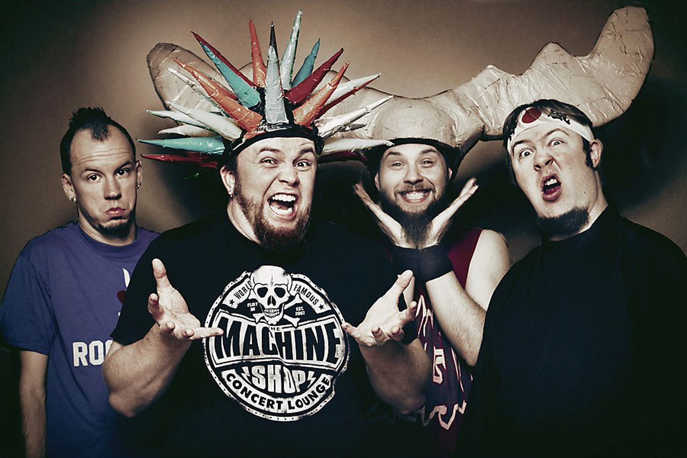

Psychostick is een Amerikaanse metalcoreband uit Tempe (Arizona). Ze staan vooral bekend voor het gebruik humoristische teksten in hun nummers, een stijl die ze zelf humor-core noemen.De groep werd opgericht in 2000. Aanvankelijk speelden ze toen nog alternatieve metal, maar al snel schakelden ze over op de metalcore.In juli 2006 was hun eerste tournee.